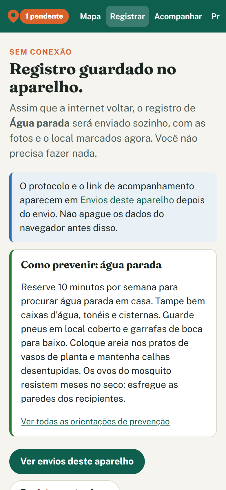
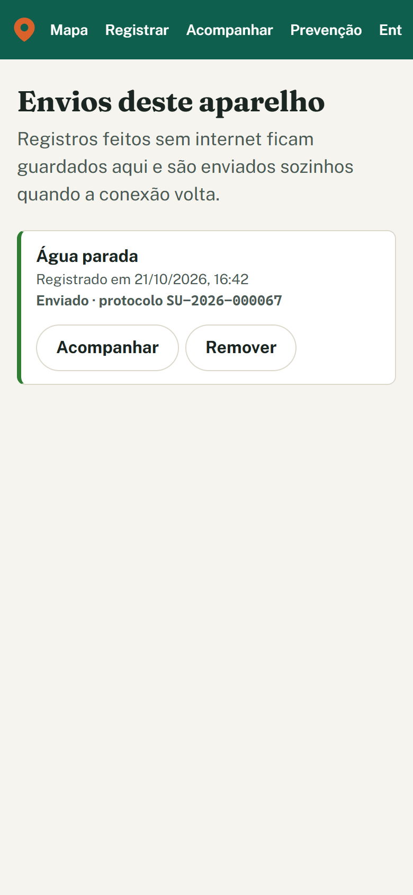
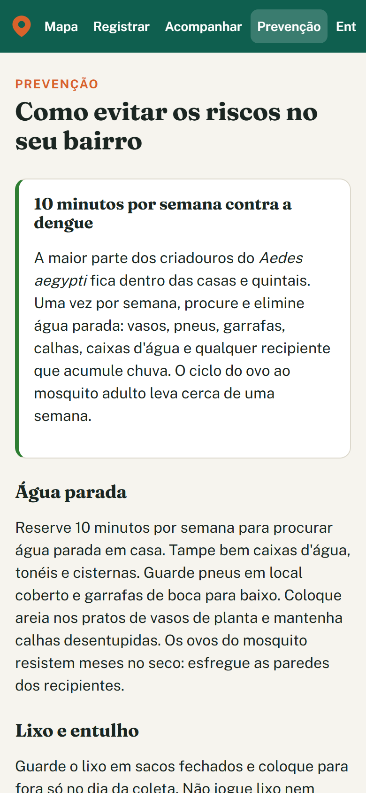
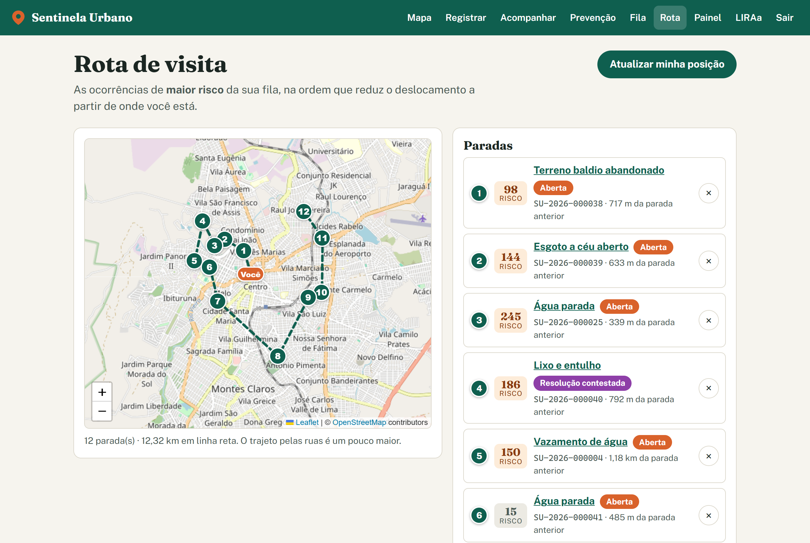
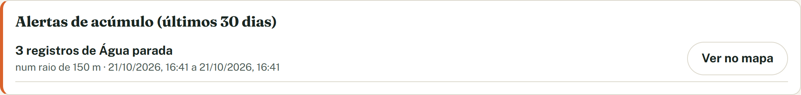
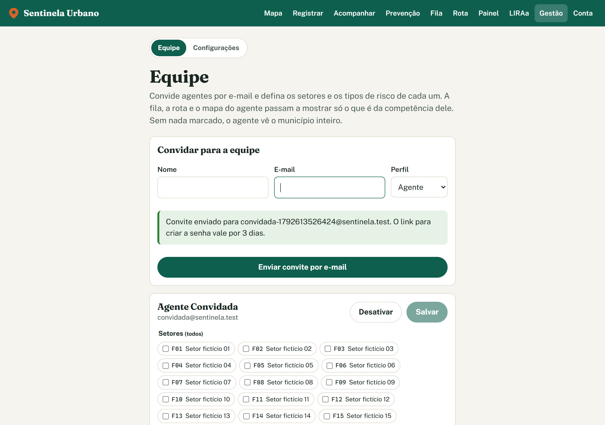
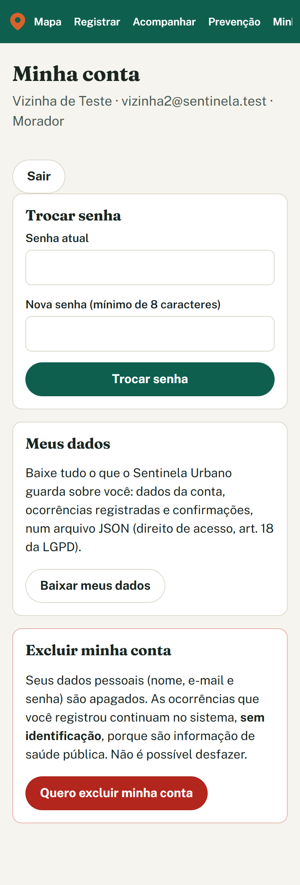
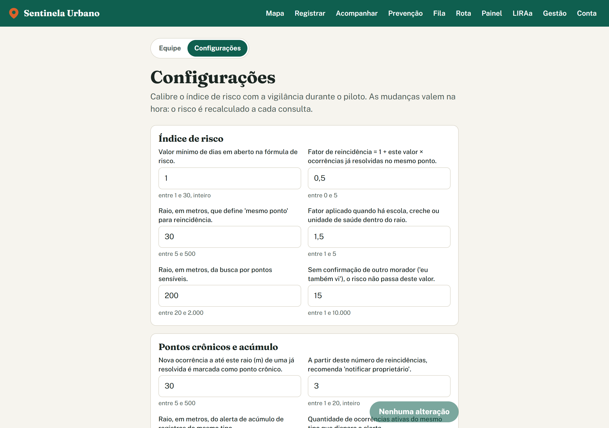
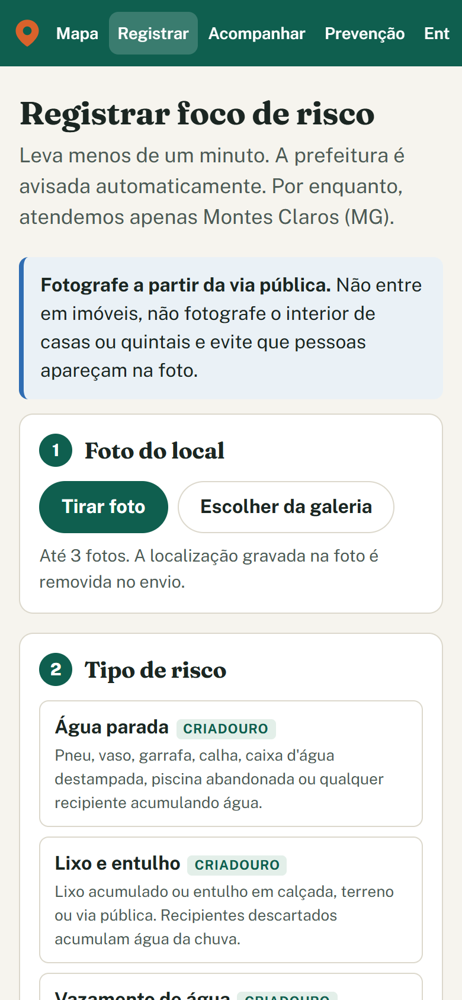

O que foi feito nas fases 4 e 5, como foi testado e o que ainda falta para o piloto em Montes Claros (MG).
Desde a apresentação das três primeiras fases, o Sentinela Urbano ganhou as ampliações do backlog (fase 4) e a preparação para o piloto (fase 5). Na fase 4 entraram o registro sem internet, a rota de visita do agente, o alerta de acúmulo de focos, as dicas de prevenção, o escopo de trabalho por agente e o aviso por grupo de mensagens. Na fase 5 entraram a versão de produção local com HTTPS, o backup com teste de restauração, as contas de equipe por convite, a recuperação de senha, os direitos do titular pela LGPD, o limite de uso contra abuso e a tela de configurações do índice de risco.
docker compose -f docker-compose.prod.yml up -d --build), abra https://localhost:8443 e siga o
roteiro de 15 minutos em docs/DEMONSTRACAO.md. Antes de cada apresentação, o comando
reset-demo devolve os dados de demonstração ao estado inicial.
Sem sinal, o registro fica guardado no próprio celular, com as fotos, e é enviado sozinho quando a conexão volta. Cada registro leva um identificador gerado no aparelho, por isso um reenvio nunca cria uma ocorrência duplicada. A hora em que o morador viu o problema também é guardada. Registros com mais de 7 dias são recusados, para não acionar a equipe por uma foto velha. Os tipos de risco e a área atendida ficam em cache, e o formulário abre mesmo sem rede.



O sistema primeiro escolhe quais ocorrências visitar (as 12 de maior risco da fila do agente) e depois em que ordem (o menor caminho a partir da posição dele). Assim, a proximidade nunca passa na frente do risco. As distâncias hoje são em linha reta.

Três focos ativos do mesmo tipo a até 150 m, em 7 dias, geram um alerta para os gestores (e-mail, grupo de mensagens e painel). Novos registros na mesma área não repetem o alerta. Os valores podem ser ajustados na tela de configurações.

Uma segunda pilha (docker-compose.prod.yml) reproduz o servidor real, sem atrapalhar a de
desenvolvimento:
A variável APP_ENV separa desenvolvimento, demonstração e produção. Em produção, a API se recusa a
subir se encontrar uma configuração insegura: senha padrão do login, e-mails de teste, endereço sem HTTPS ou o
servidor de e-mail de testes.
O backup é diário e guarda as 14 cópias mais recentes do banco e das fotos. Um arquivo só passa a contar como
backup quando está completo. O comando verify restaura a cópia num banco separado e confere o
conteúdo. No teste, voltaram 63 ocorrências, 5 usuários e a versão 0005 do banco. Durante esse teste apareceu um
defeito: um backup vazio, feito antes de o banco ficar pronto, foi registrado como sucesso. O script foi
corrigido e testado de novo.




docs/PUBLICACAO.md: passo a passo para o servidor real, incluindo:
.env e domínio com HTTPS;docs/DEMONSTRACAO.md: roteiro de apresentação de 15 minutos, com os perfis morador, agente e gestora, e tabela de problemas comuns.README.md, CLAUDE.md e docs/decisoes.md atualizados com as decisões e os comandos das fases 4 e 5.| Verificação | Resultado |
|---|---|
| Testes da API (pytest, com PostGIS real) | 187 passando. Inclui 16 testes novos da fase 5: senha, convite, LGPD, limite de uso, configurações e produção insegura. |
| Testes do app web (Vitest) | 31 passando. Inclui a fila offline. |
| Verificação de tipos, padrão de código e compilação | Sem erros. |
| Aplicativo instalável (PWA) | OK: service worker ativo; manifesto com nome, modo standalone e 3 ícones. |
| App fechado e reaberto sem internet | OK: o formulário abre com os 8 tipos de risco. |
| Esqueci minha senha (e-mail → link → nova senha) | OK: termina com a usuária logada. |
| Convite de agente (gestor → e-mail → senha) | OK: a agente cai direto na fila, com 39 itens. |
| Política de segurança (CSP) e erros de página | Nenhuma violação. |
| Backup e restauração | OK: 63 ocorrências, 5 usuários e migração 0005 restaurados. |
Reinício da demonstração (reset-demo) | OK: 5 usuários, 63 ocorrências e 16 setores fictícios recriados. Em produção, o comando é recusado. |
O Lighthouse não pôde ser instalado nesta máquina, por um erro de certificado do npm. No lugar dele, um script
próprio (medicao-desempenho.mjs) abriu cada página pela primeira vez, sem cache, numa tela de celular
com rede limitada:
| Página | 1º conteúdo na tela | Maior conteúdo | Dados baixados | Campos sem rótulo |
|---|---|---|---|---|
| Mapa (/) | 1,8 s | 3,8 s | 597 KiB | 0 de 13 |
| Registrar | 1,5 s | 1,5 s | 438 KiB | 0 de 13 (antes: 3) |
| Prevenção | 1,7 s | 1,8 s | 251 KiB | sem campos |
| Entrar | 1,5 s | 1,5 s | 250 KiB | 0 de 2 |
| Acompanhar | 1,4 s | 1,4 s | 250 KiB | 0 de 1 |
Todas as páginas declaram o idioma português e têm título. Nenhum botão ou link ficou sem nome, e nenhuma imagem ficou sem texto alternativo. O mapa é a página mais pesada, por causa das imagens das ruas, que vêm do OpenStreetMap. Um servidor de mapas próprio (seção 6) reduziria esse tempo.
| Endereço ou arquivo | Para quê |
|---|---|
| https://localhost:8443 | Versão de produção local, a que deve ser usada para apresentar. |
| http://localhost:8026 | Mailpit da versão de produção: e-mails à prefeitura, convites, senhas e mensagens do grupo simulado. |
| http://localhost:5173 e 8025 | Versão de desenvolvimento e o Mailpit dela. |
backups/ | Cópias automáticas do banco e das fotos. |
docs/DEMONSTRACAO.md | Roteiro da apresentação. |
docs/PUBLICACAO.md | Como publicar de verdade. |
| Usuários de teste | morador@, agente@, gestor@, vizinho1@ e vizinha2@sentinela.test, todos com a senha sentinela123. |
Tudo o que dava para fazer de graça e sem publicar já foi feito. Os itens abaixo estão agrupados pelo que cada um exige para sair do papel.
Um túnel gratuito, como o Cloudflare Tunnel, daria um endereço HTTPS público temporário. Com ele, qualquer pessoa testaria pelo celular, de qualquer lugar, sem instalar certificado. Não foi feito porque expõe o computador na internet enquanto estiver ligado.
Alternativa já documentada, sem expor nada: teste pela rede Wi-Fi local (seção 5 do PUBLICACAO.md).
Hoje as imagens das ruas vêm do tile.openstreetmap.org, cujas regras não permitem uso intenso em
produção. Um servidor próprio exige baixar o recorte de Minas Gerais do OpenStreetMap (algumas centenas de MB).
Não foi feito porque o download precisa da sua autorização.
A configuração já está preparada: VITE_TILE_URL e CSP_TILE_HOSTS.
O código está pronto e testado. Falta criar o bot no @BotFather e um grupo com a equipe. O token do bot é uma
credencial e deve ser criado e colado no .env pelo responsável, nunca por terceiros.
Passo a passo na seção "Grupo de mensagens" do README.md.
| Item | O que é preciso |
|---|---|
| Hospedagem custo | Um servidor Linux com Docker (VPS pequena ou servidor da prefeitura). A pilha de produção sobe nele sem mudanças no código. |
| Domínio custo | Endereço próprio (por exemplo, um subdomínio .gov.br da prefeitura). O HTTPS sai sozinho pelo Caddy. |
| E-mail institucional | SMTP da prefeitura ou serviço transacional, para os e-mails não caírem no spam. Mais o endereço oficial da vigilância ambiental. |
| Setores e LIRAa reais | Os polígonos dos setores com população (GeoJSON) e os resultados do LIRAa da Secretaria de Saúde. Os importadores já existem; hoje os dados são fictícios. |
| Revisão jurídica (LGPD) | Revisão do termo de uso e indicação do encarregado de dados da prefeitura. |
| Calibragem com a vigilância | Validar com os agentes os pesos dos tipos, os coeficientes do risco e os textos de prevenção. A tela de configurações já permite os ajustes sem programador. |
| Teste com usuários reais | Piloto com alguns agentes e moradores, para medir uso real, tempo de resposta e concordância com o LIRAa. |
| Melhoria | Por quê |
|---|---|
| Rota pelas ruas (OSRM) técnica | A rota usa distância em linha reta. Um roteador de ruas, gratuito e com dados do OpenStreetMap, daria o caminho real. |
| Limite do município por polígono técnica | Hoje a área atendida é um retângulo em volta de Montes Claros. O contorno exato do município evitaria aceitar pontos nas bordas, fora dele. |
| Limite de uso compartilhado técnica | O limite fica na memória de um único processo, o que basta para o piloto. Para rodar em várias máquinas, é preciso Redis. |
| Auditoria Lighthouse técnica | Rodar no servidor ou noutra máquina, onde o npm funcione, para confirmar a medição própria. |
| Teste em celulares reais técnica | Câmera, GPS e instalação foram verificados no navegador simulando celular. Falta repetir em aparelhos Android e iPhone, pela rede local ou pelo túnel. |
| Monitoramento técnica | Aviso automático se a API cair ou se o backup falhar (por exemplo, um serviço gratuito de uptime). |
docs/DEMONSTRACAO.md.docs/PUBLICACAO.md e iniciar o piloto.